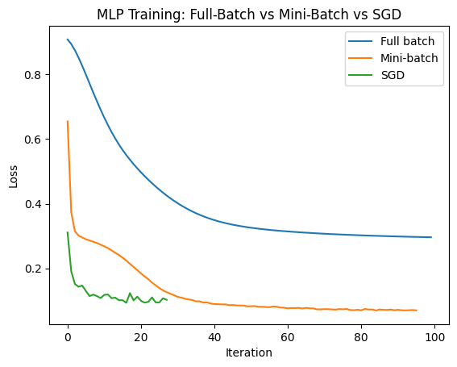

Session Title: Artificial Netural Networks for classification
Instructor: Zahra Sadeghi
X, y = make_moons(
n_samples=1000,
noise=0.2,
random_state=42
)
X_train, X_test, y_train, y_test = train_test_split(
X,
y,
test_size=0.2,
stratify=y,
random_state=42
)
scaler = StandardScaler()
X_train = scaler.fit_transform(X_train)
X_test = scaler.transform(X_test)Full-batch Gradient Descent
batch_size = len(X_train)One subtle point: in scikit-learn’s implementation, the output activation is handled internally according to the classification task. activation=“relu” only specifies the hidden layers.
mlp_full = MLPClassifier(
hidden_layer_sizes=(20, 20),
activation="relu",
solver="sgd",
learning_rate_init=0.01,
batch_size=len(X_train), # Full batch
max_iter=100,
random_state=42
)
mlp_full.fit(X_train, y_train)/usr/local/lib/python3.13/dist-packages/sklearn/neural_network/_multilayer_perceptron.py:691: ConvergenceWarning: Stochastic Optimizer: Maximum iterations (100) reached and the optimization hasn't converged yet.
warnings.warn(MLPClassifier(batch_size=800, hidden_layer_sizes=(20, 20),
learning_rate_init=0.01, max_iter=100, random_state=42,
solver='sgd')In a Jupyter environment, please rerun this cell to show the HTML representation or trust the notebook. On GitHub, the HTML representation is unable to render, please try loading this page with nbviewer.org.
MLPClassifier(batch_size=800, hidden_layer_sizes=(20, 20),
learning_rate_init=0.01, max_iter=100, random_state=42,
solver='sgd')Stochastic Gradient Descent
batch_size = 1mlp_sgd = MLPClassifier(
hidden_layer_sizes=(20, 20),
activation="relu",
solver="sgd",
learning_rate_init=0.01,
batch_size=1, # stochastic GD: batch_size=1
max_iter=100, # max_iter is the maximum number of epochs
random_state=42
)
mlp_sgd.fit(X_train, y_train)MLPClassifier(batch_size=1, hidden_layer_sizes=(20, 20),
learning_rate_init=0.01, max_iter=100, random_state=42,
solver='sgd')In a Jupyter environment, please rerun this cell to show the HTML representation or trust the notebook. On GitHub, the HTML representation is unable to render, please try loading this page with nbviewer.org.
MLPClassifier(batch_size=1, hidden_layer_sizes=(20, 20),
learning_rate_init=0.01, max_iter=100, random_state=42,
solver='sgd')Mini-batch Gradient Descent
batch_size = 32mlp_mini = MLPClassifier(
hidden_layer_sizes=(20, 20),
activation="relu",
solver="sgd",
learning_rate_init=0.01,
batch_size=32, # Mini-batch
max_iter=100,
random_state=42
)
mlp_mini.fit(X_train, y_train)MLPClassifier(batch_size=32, hidden_layer_sizes=(20, 20),
learning_rate_init=0.01, max_iter=100, random_state=42,
solver='sgd')In a Jupyter environment, please rerun this cell to show the HTML representation or trust the notebook. On GitHub, the HTML representation is unable to render, please try loading this page with nbviewer.org.
MLPClassifier(batch_size=32, hidden_layer_sizes=(20, 20),
learning_rate_init=0.01, max_iter=100, random_state=42,
solver='sgd')Compare the Loss curves
plt.plot(mlp_full.loss_curve_, label="Full batch")
plt.plot(mlp_mini.loss_curve_, label="Mini-batch")
plt.plot(mlp_sgd.loss_curve_, label="SGD")
plt.xlabel("Iteration")
plt.ylabel("Loss")
plt.legend()
plt.title("MLP Training: Full-Batch vs Mini-Batch vs SGD")
plt.show()